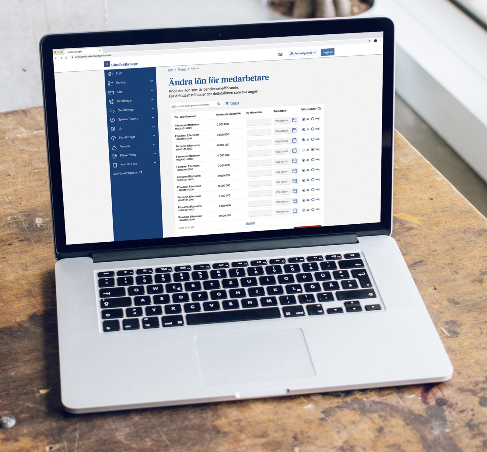

Simplifying complex financial journeys within a large organisation.
Due to confidentiality, this case focuses on my role, process and contributions rather than showing detailed product interfaces.

I joined Länsförsäkringar as a consultant, moving between early-stage innovation, established product teams and a larger platform transformation.
The environments were very different, but my role was often similar: dig into the problem, bring in the user perspective and create enough clarity for the team to move forward.
Exploring a more proactive approach to home security
Researching behaviours and needs as part of the innovation team exploring how Länsförsäkringar could move from reacting to problems in people's homes to preventing them.
Simplifying a complex part of Mina sidor
Redesigning the occupational pension section of Mina sidor, restructuring how different pension and insurance products were presented to make the experience easier to navigate.
Designing a new customer journey
Designing the purchase flow for life insurance on Länsförsäkringar's public website, from requirements to final design.
Preparing for a major platform transition
Leading the UX research for occupational pension during the pre-study for Länsförsäkringar's transition to Lumera.
I worked with the programme lead to identify needs, gaps and requirements, ensuring the new platform could support the realities of the existing experience.
The question wasn't simply what to design. It was what the new platform needed to support for us to confidently move away from the existing solution.
There was no single source of truth for what the new platform needed to support. I started by bringing the people closest to the existing experience into the process.
A survey went out to offices across Sweden, followed by deeper sessions with teams experiencing some of the biggest challenges. Their input became the foundation for defining needs, shaping priorities and scoping what came next.
The offices were already struggling with the existing experience, while knowing that meaningful change would take time.
Giving them space to share what wasn't working, and showing that those needs were being carried into the work, created a sense of calm and trust around the transition.
Their input also gave us a stronger foundation for Lumera, grounding requirements and priorities in the realities of the people closest to the existing experience.
Being heard mattered before anything shipped.